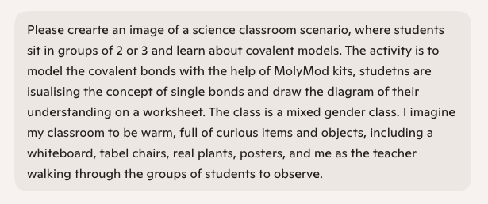
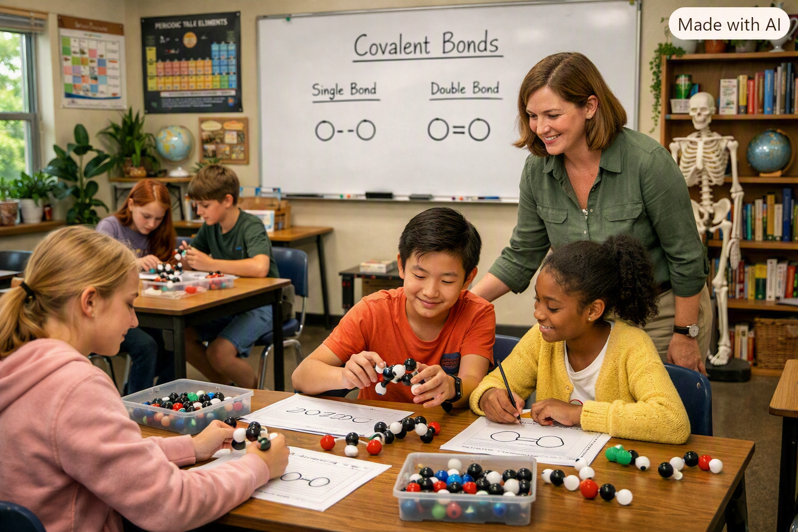
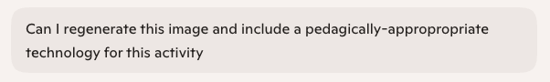
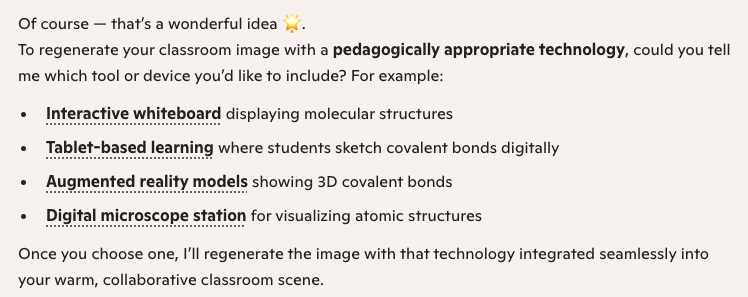
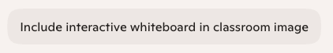
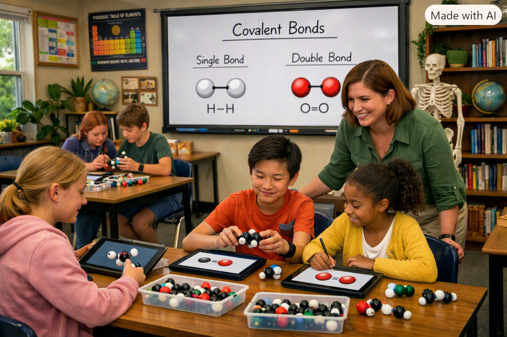
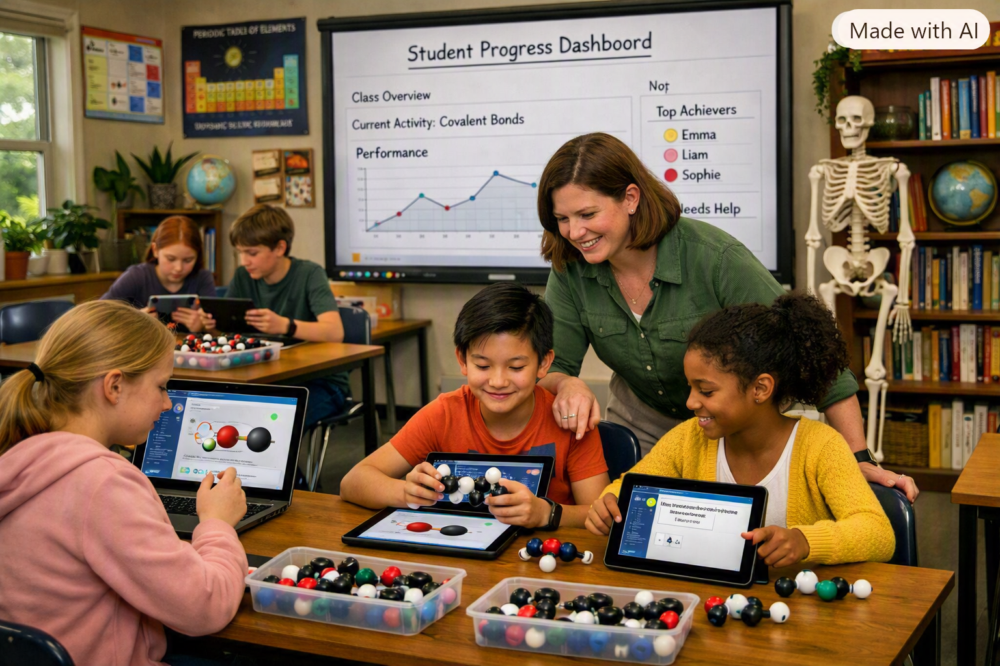
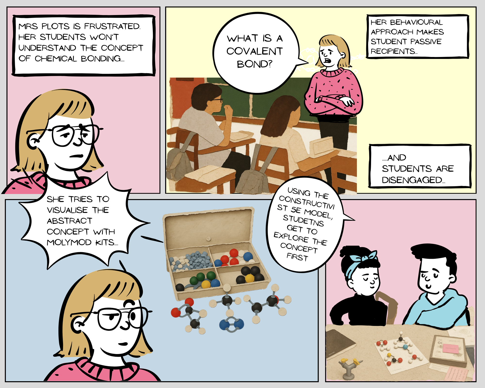
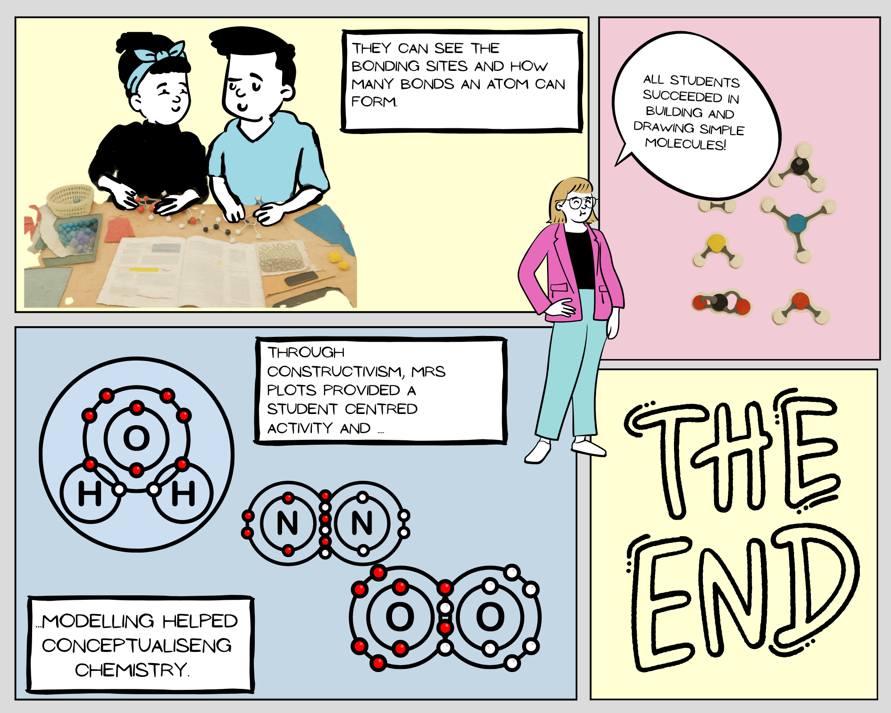

AI Task










One digital technology option is an online interactive, such as “Build Molecules,” which lets students model covalent bonds as a game (IC2020 Games, n.d.). The benefit of building models online as a student-centred, constructivist approach would be similar to the physical models; however, a greater concern would be the distraction of other applications on the computer (Bower, 2017). Strengthening students’ digital competencies would be necessary to fully make the activity meaningful (Tan et al., 2024). Further, if the school does not have a bring-your-own-device policy, access to computers can be an issue. Students who might benefit more from online interactive models than physical ones are those struggling with fine motor skills. One of my students at the moment is diagnosed with dystonia, which impacts his fine motor control. The technology version would provide a more inclusive environment.







Students are presented as mixed-gender, just as I asked in my instructions. The teacher is a middle-aged white female, and interestingly, she is focused on two students from other ethnic backgrounds. Everyone seems overly happy and engaged in learning, and healthy and glowing. The students are not represented in the correct age group, which I could have picked up when generating these images. Additionally, the content on the students’ tablets and the whiteboard is incorrect; the bonding types shown are not real examples. None of the students is represented as disabled and all students work on the same task, which does not seem differentiated or personalised at all. When I ask for personalisation, it gets hypercritical as it shows everyone's data on the whiteboard, which is what AI takes from students, but not what personalised learning means. Proper personalised learning would include scaffolded tasks for some and extensions for others, for example.